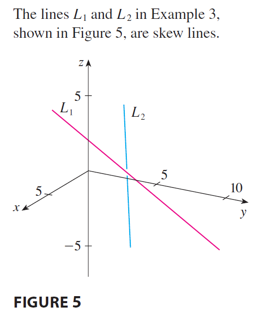

SOLUTION The lines are not parallel because the
corresponding direction vectors \(\langle 1,
3, -1 \rangle\) and \(\langle 2, 1, 4
\rangle\) are not parallel. (Their components are not
proportional.) If \(L_1\) and \(L_2\) had a point of intersection, there
would be values of \(t\) and \(s\) such that \[
1 + t = 2s
\] \[
-2 + 3t = 3 + s
\] \[
4 - t = -3 + 4s
\] But if we solve the first two equations, we get \(t = \frac{11}{5}\) and \(s = \frac{8}{5}\), and these values don’t
satisfy the third equation. Therefore there are no values of \(t\) and \(s\) that satisfy the three equations, so
\(L_1\) and \(L_2\) do not intersect. Thus \(L_1\) and \(L_2\) are skew lines.